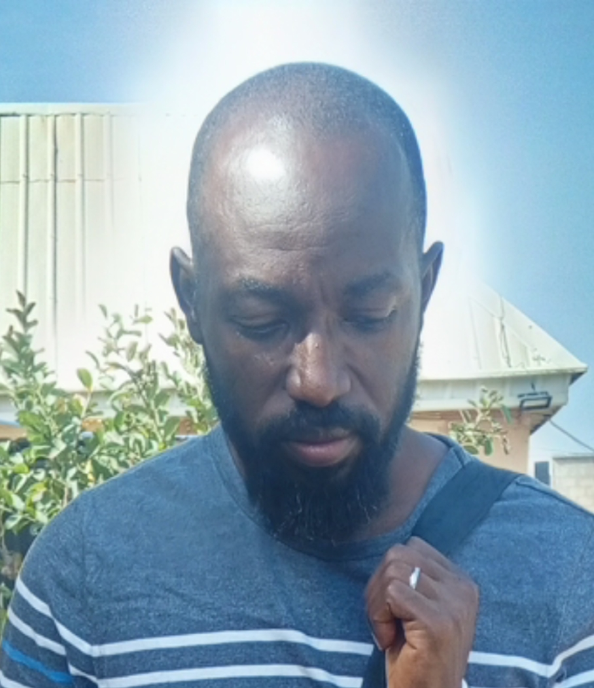
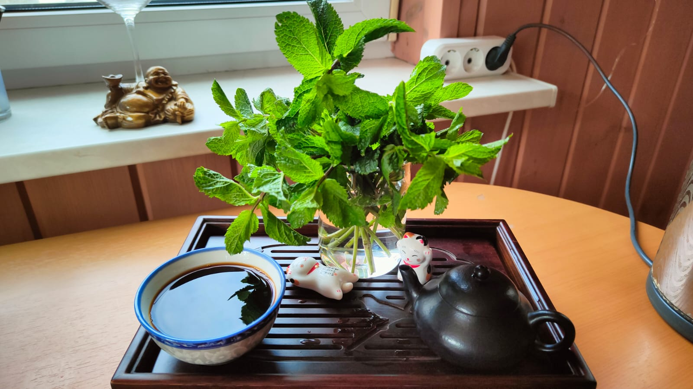
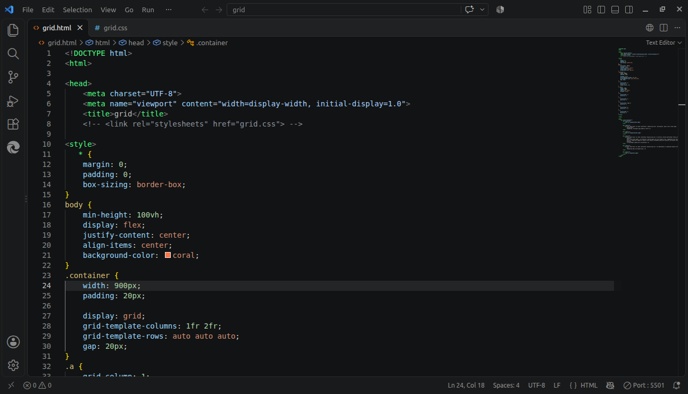

My days as a begginer are characterized by sleepless nights, early starts, and hard days. A journey of coding practical solutions to challenges facing humanity.

An aspiring software engineer driven by a passion for technology, problem-solving, and creating innovative software solutions. I take initiative in expanding my programming expertise, strengthening my technical abilities, and developing applications that address real-world challenges. My goal is to grow into a highly capable software engineer who delivers meaningful results and contributes to impactful projects that create lasting value.
Stepping up to CSS grid, being as tough as I can be, like everyone that has ever conquered it.
